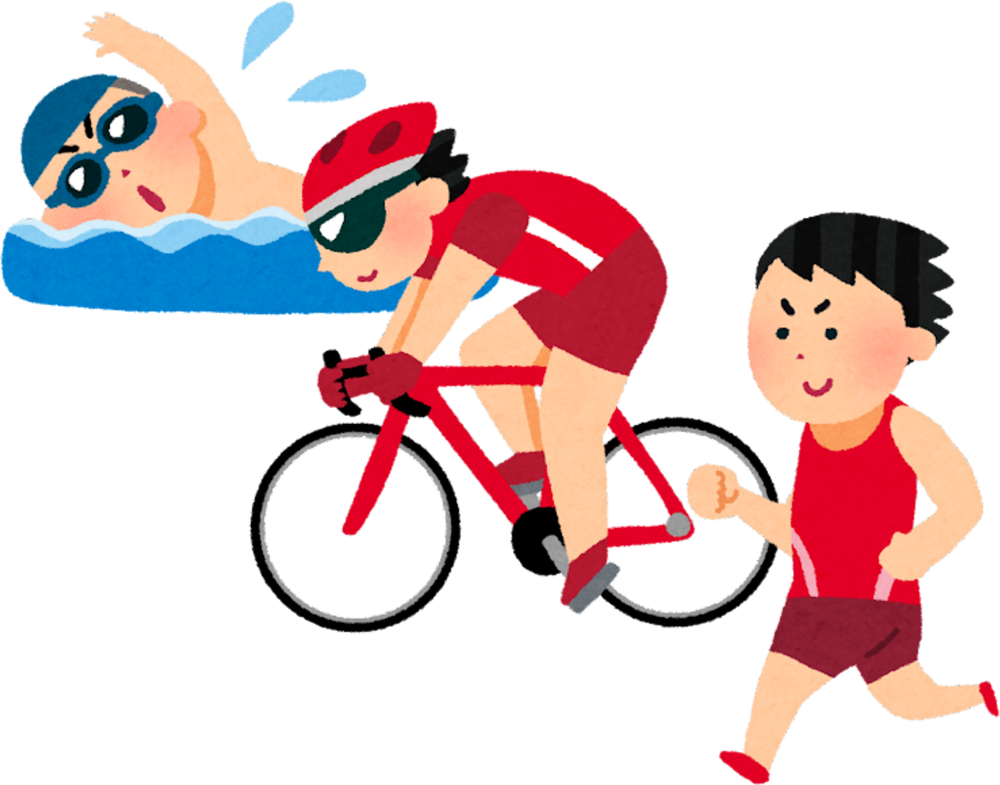

Pencegahan Diabetes Melitus
Pada Anak
Bagaimana Sih Cara Mencegah Diabetes Melitus?
Ada beberapa hal yang bisa kamu lakukan:
- Makan Makanan Sehat

Pilihlah makanan yang mengandung karbohidrat, protein, serat, dan vitamin yang cukup. Hindari makanan yang terlalu banyak gula.
- Banyak beraktivitas fisik
Lakukan olahraga ringan seperti berjalan, bersepeda, atau bermain dengan teman. Ini akan menjaga tubuhmu tetap sehat.
- Batasi waktu main HP/gadget
Terlalu lama di depan layar dapat membuat kamu malas bergerak dan berisiko terkena diabetes.
- Hindari stres
Jika kamu merasa stres, cobalah untuk rileks dengan melakukan hal-hal yang menyenangkan.
Selain cara yang diberikan diatas, Kementrian Kesehatan juga memberikan beberapa cara untuk menjegah terjadinya diabetes melitus dengan cara CERDIK seperti yang ada pada gambar dibawah ini!